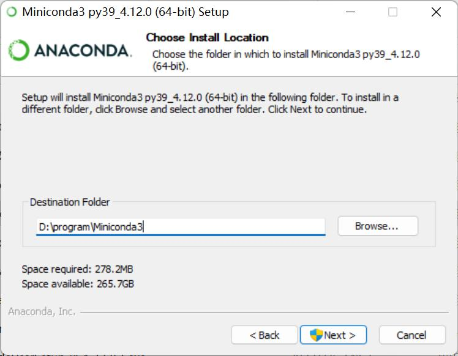
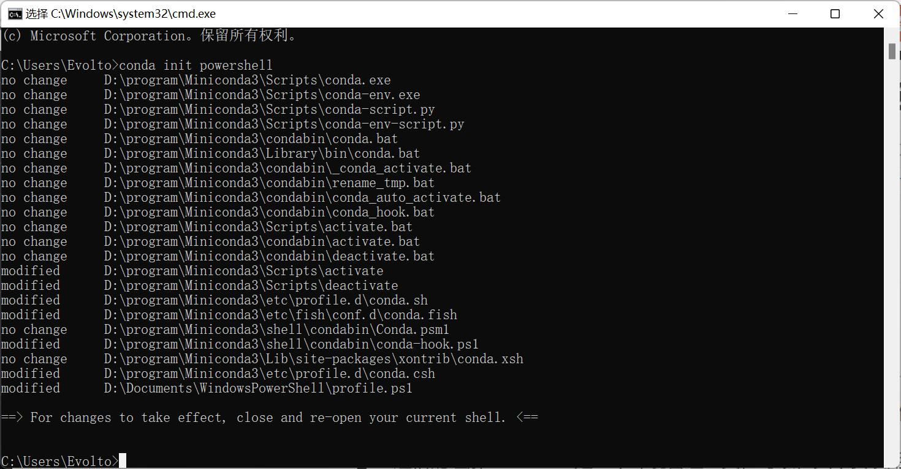
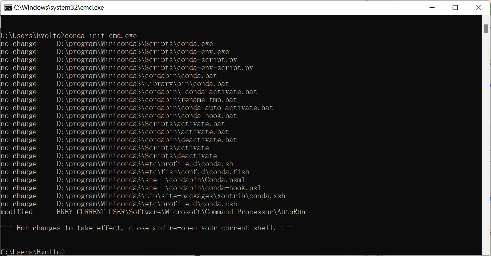
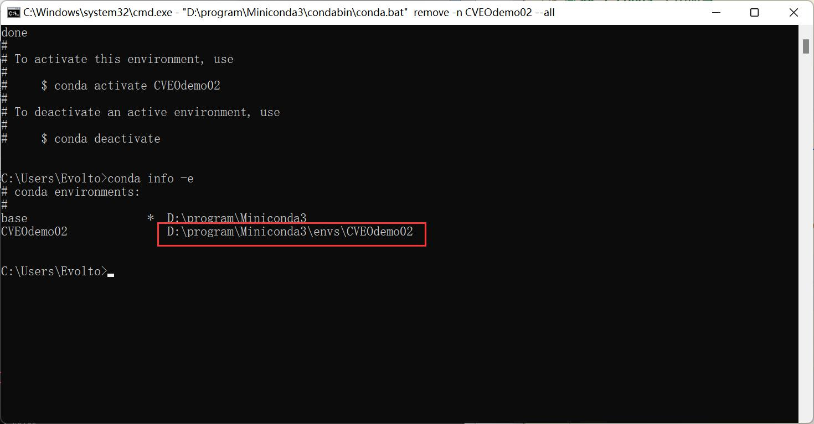
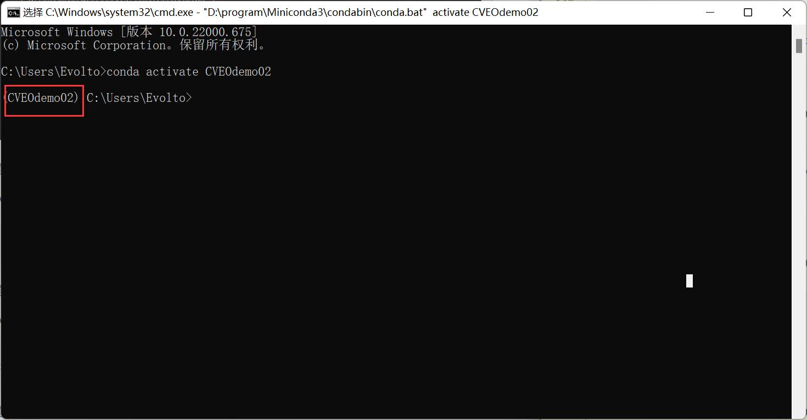

Win11 安装配置 Miniconda 全过程记录¶
1 多版本 conda 间的区别¶
参考：简书 - 关于bioconda,miniconda,conda,anaconda的区别
2 下载 Miniconda¶
下载链接：清华镜像【这里我们选择 python3.9 版本】
3 安装 Miniconda¶
3.1 修改安装位置¶
在安装时，右击 → 以管理员身份运行。同时，软件默认安装在 C 盘，所以需要修改文件安装位置。【要求：位置不在 C 盘，且文件名为英文。】

3.2 安装成功¶
3.3 添加环境变量¶
由于在安装时，添加环境变量的选项是灰色不可选状态，所以需要我们自行添加。
- 右击此电脑 → 属性 → 高级系统设置 → 环境变量
- 添加环境变量 Path
这里的文件位置信息以安装时设置位置为准，不唯一。
D:\program\Miniconda3
D:\program\Miniconda3\Scripts
D:\program\Miniconda3\Library\bin
到这里才算是正式完成 miniconda 的安装，即软件安装 + 环境配置，下面我们需要对 conda 进行初始化。
4 conda 初始化¶
初始化 PowerShell
conda init powershell

初始化 cmd
conda init cmd.exe

5 更换国内镜像源¶
5.1 生成下载源文件的配置文件¶
打开一个新的 cmd 窗口，输入下方指令，随后在 C 盘的用户目录下会生成一个 .condarc 文件。
conda config --set show_channel_urls yes
5.2 生成下载源文件的配置文件¶
修改前内容
在 C 盘用户目录下找到文件后，右击使用记事本打开。
修改后内容
修改内容包括：创建虚拟环境默认安装的位置，以及清华大学镜像源
envs_dirs:
- D:\program\Miniconda3\envs
channels:
- defaults
show_channel_urls: true
channel_alias: https://mirrors.tuna.tsinghua.edu.cn/anaconda
default_channels:
- https://mirrors.tuna.tsinghua.edu.cn/anaconda/pkgs/main
- https://mirrors.tuna.tsinghua.edu.cn/anaconda/pkgs/free
- https://mirrors.tuna.tsinghua.edu.cn/anaconda/pkgs/r
- https://mirrors.tuna.tsinghua.edu.cn/anaconda/pkgs/pro
- https://mirrors.tuna.tsinghua.edu.cn/anaconda/pkgs/msys2
custom_channels:
conda-forge: https://mirrors.tuna.tsinghua.edu.cn/anaconda/cloud
msys2: https://mirrors.tuna.tsinghua.edu.cn/anaconda/cloud
bioconda: https://mirrors.tuna.tsinghua.edu.cn/anaconda/cloud
menpo: https://mirrors.tuna.tsinghua.edu.cn/anaconda/cloud
pytorch: https://mirrors.tuna.tsinghua.edu.cn/anaconda/cloud
simpleitk: https://mirrors.tuna.tsinghua.edu.cn/anaconda/cloud
清除索引缓存，保证用的是镜像站提供的索引
conda clean -i
修改虚拟环境默认安装位置
找到 miniconda 目录下的 envs 文件夹，右击打开属性。

6 conda 常用命令¶
6.1 检查当前环境信息¶
conda info
6.2 创建并查看虚拟环境¶
创建新的虚拟环境
创建一个名为 CVEOdemo02 的 python3.9 的环境。
conda create -n CVEOdemo02 python=3.9
查看已创建的虚拟环境
conda info -e

6.3 移除虚拟环境¶
移除名为 CVEOdemo02 的虚拟环境。
conda remove -n CVEOdemo02 --all
6.4 激活 & 关闭虚拟环境¶
激活虚拟环境
激活名为 CVEOdemo02 的虚拟环境，激活后如下图所示，前面多一个 (CVEOdemo02)。
conda activate CVEOdemo02

关闭虚拟环境
关闭名为 CVEOdemo02 的虚拟环境，在激活后不能直接使用以下命令退出虚拟环境，否则会出现下图情况。
conda deactivate CVEOdemo02